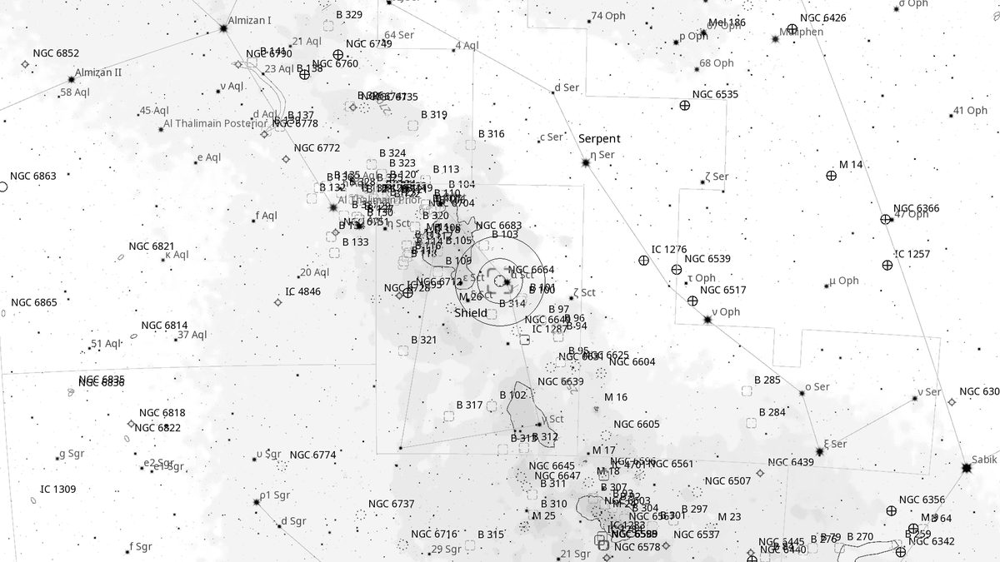
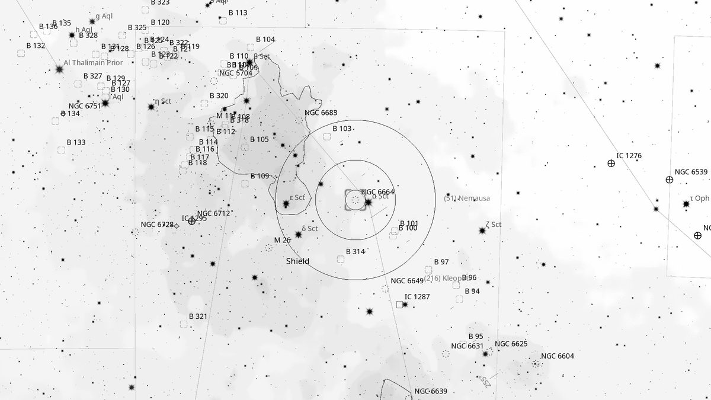
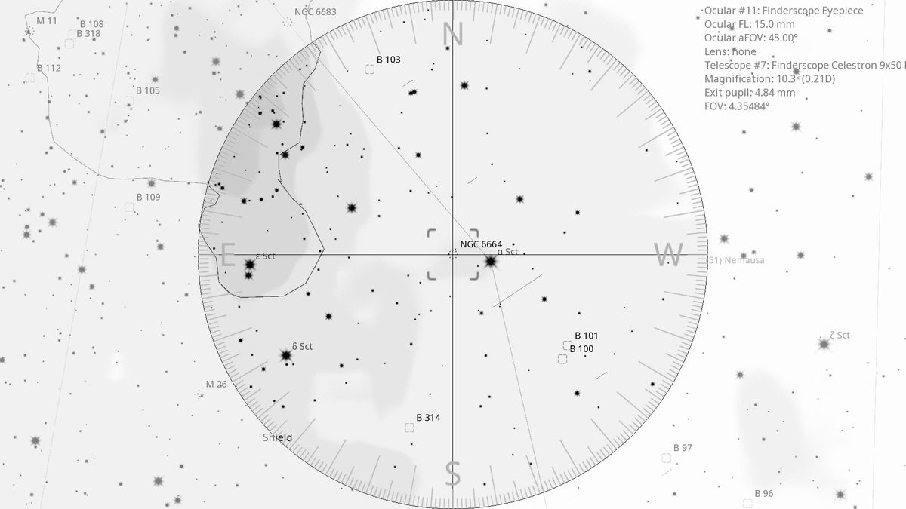
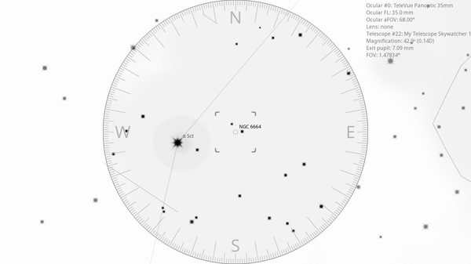

NGC 6664 (OC)
Open Cluster in Scutum
| R.A. | Dec. | Size | Mag | SB | Cnt.St | Type | Distance | Chart |
|---|---|---|---|---|---|---|---|---|
| 18h 36m 31.2s | -08° 11′ 19.2″ | 18.0′ | 7.8 | 13.8 | III2m | OC | -- | -- |

Source: POSS-2 UK Schmidt Red (STScI) | Field: 15′ × 15′
Background
NGC 6664 is a sparse open cluster in Scutum, lying immediately east of the bright orange variable α Scuti. Around 1,200 light-years away. Easily lost in the rich Milky Way starfield.
My Observing Notes
25-cm (Meade 10-inch LX200, The Coffee Grinder): With α Sct in the field, the cluster is dominated by the bright orange-yellow star. Struggled to identify NGC 6664 at this aperture — it is very sparse and barely distinguishable from the surrounding field, which is itself strangely devoid of stars.(Saturday, June 2025)
References
Charts

Ultra-wide view (~25° field)

Wide-field view with Telrad rings (4°, 2°, 0.5°)

Finderscope view (9×50 RACI, ~4.4° TFOV)

Eyepiece view — 35 mm Panoptic on 12-inch f/5 (1.6° TFOV)